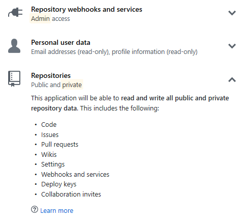
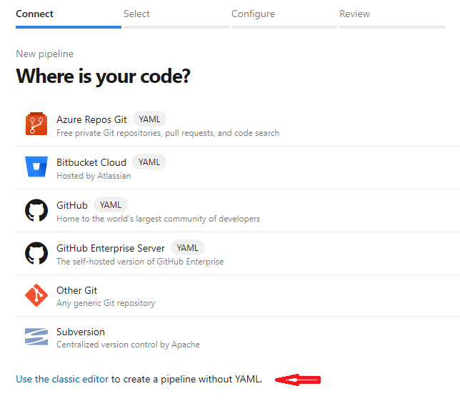
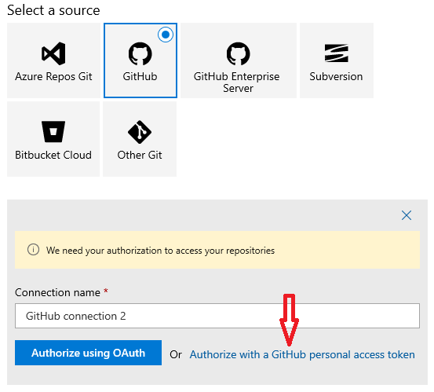
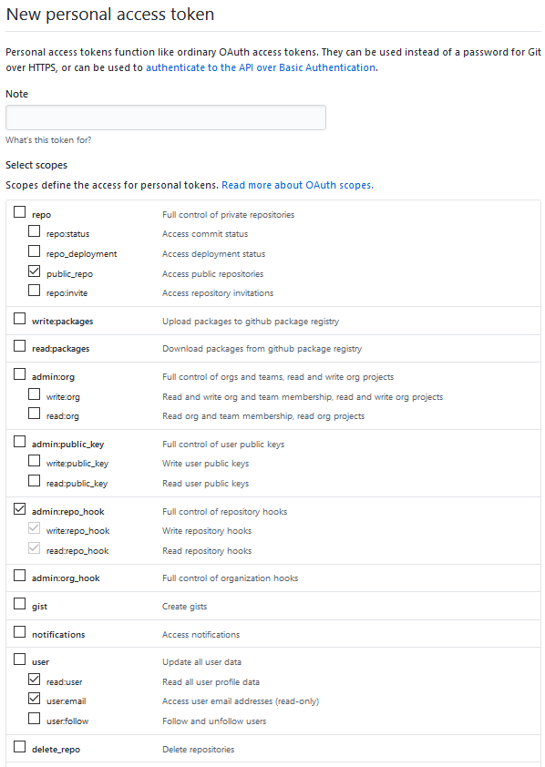
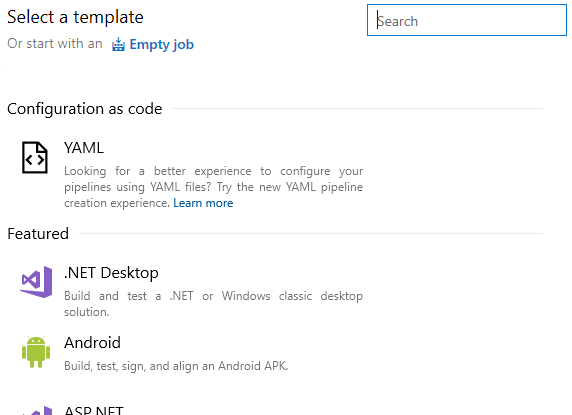
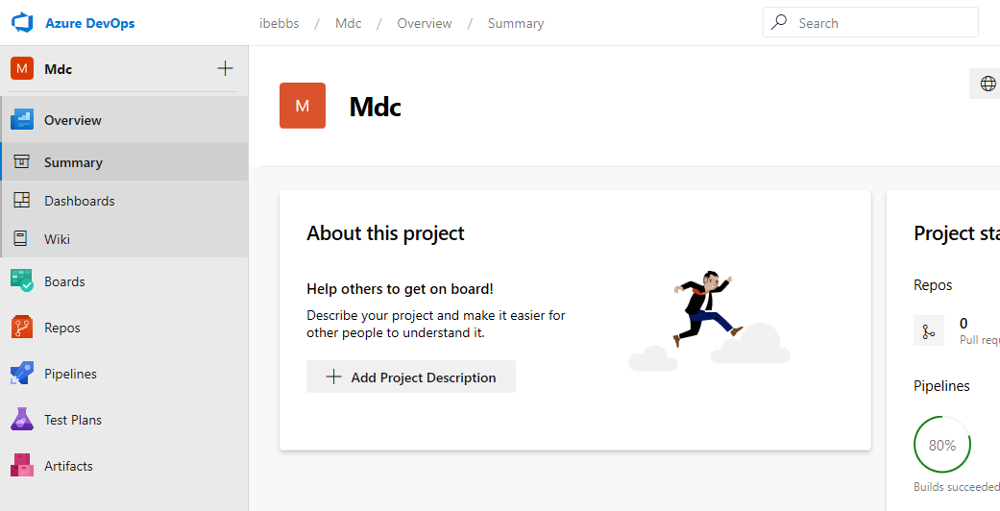
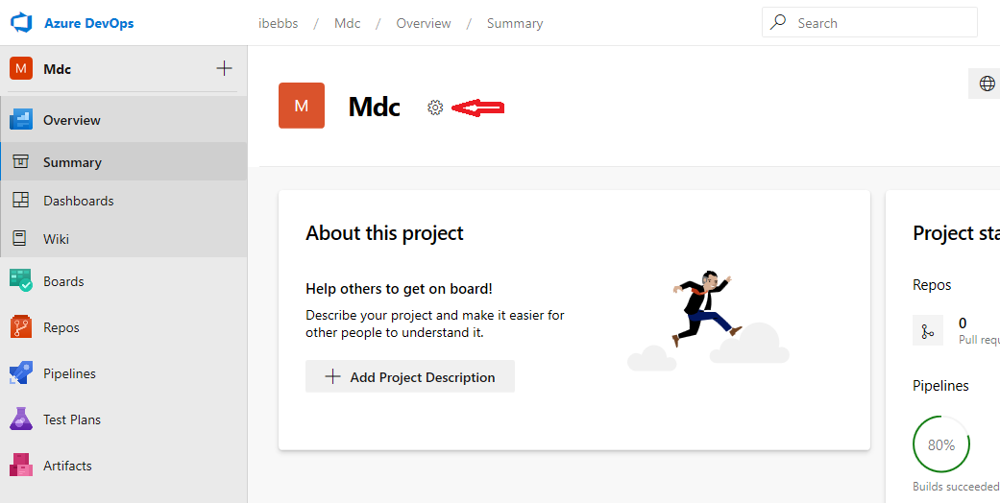

Intro
My "go to" build system and package repository - MyGet - doesn't yet support building .NET Core 3.0 (or more specifically .NET Standard 2.1) projects. Having recently read about some of the features Microsoft have been adding to Azure DevOps I thought I'd see how easy (or not) it was to get a Pipeline setup to build my project and publish the package back to MyGet.
You need what?!?
Azure DevOps is very welcoming and it takes almost no time to set up your organisation and project... all for free no less! Unfortunately, when I then started creating a new build pipeline and selected GitHub in answer to the "Where is your code?" prompt, I was presented with this OAuth request:
Yup. In order to build a single, public repository from my GitHub account, I needed to let Azure have access to everything; public and private. How about "No".
Ahh, classic!
Fortunately, Azure provides a second means of creating a pipeline - ostensibly, but not necessarily, without Yaml - through the use of a small "Use the classic editor" hyperlink below the main options.
When you do this, you're once again asked to "Select a source" and authenticate with that source as shown below. This time however, you're able to "Authorize with a GitHub personal access token".
Note: it may be possible to use a "personal access token"" with the new "Where is your code?" editor. Unfortunately, I wasn't able to confirm this as I seemed to be stuck in a OAuth loop wherein, each time I click "GitHub", it no longer asks me to log in but immediately prompts me to "Authorize Azure Pipelines" with all the privileges shown above. As there's no "Cancel" button, my only recourse is to use the browser's back button which doesn't seem to cancel the OAuth flow. ¯\(ツ)/¯
I then quickly nipped over to GitHub and created a personal access token (Settings->Developer settings->Personal access tokens) which only has access to public repositories, web-hook settings and basic user information as shown below:
Clicking "Generate token" provided me with a token which I copy/pasted into Azure pipelines. I was then able to select the repository I wanted to build from a list of only my public repositories. Ace!
Yet still with Yaml!
I was then asked to "Select a template". At this point, I could elect to use a Yaml file (per the "new editor") as shown below:
This seemed to be exactly what I wanted until I realised that this path doesn't actually create a Yaml build template for you but instead expects find one in the repository.
As I hadn't written an Azure Pipelines Yaml file before, the idea of creating one from scratch was a little daunting. I therefore decided to cheat. I copied the repository from GitHub to Azure DevOps Repos and recreated a build pipeline using the new "Where is your code?" editor. I then copied the Yaml file this produced into my GitHub repository and continued building this pipeline.
So here's the template azure-pipelines.yml file I ended up with:
# ASP.NET Core (.NET Framework)
# Build and test ASP.NET Core projects targeting the full .NET Framework.
# Add steps that publish symbols, save build artifacts, and more:
# https://docs.microsoft.com/azure/devops/pipelines/languages/dotnet-core
trigger:
- master
pool:
vmImage: 'windows-latest'
variables:
solution: '**/*.sln'
buildPlatform: 'Any CPU'
buildConfiguration: 'Release'
steps:
- task: NuGetToolInstaller@1
- task: NuGetCommand@2
inputs:
restoreSolution: '$(solution)'
- task: VSBuild@1
inputs:
solution: '$(solution)'
msbuildArgs: '/p:DeployOnBuild=true /p:WebPublishMethod=Package /p:PackageAsSingleFile=true /p:SkipInvalidConfigurations=true /p:DesktopBuildPackageLocation="$(build.artifactStagingDirectory)\WebApp.zip" /p:DeployIisAppPath="Default Web Site"'
platform: '$(buildPlatform)'
configuration: '$(buildConfiguration)'
- task: VSTest@2
inputs:
platform: '$(buildPlatform)'
configuration: '$(buildConfiguration)'
It's good but it's not right
Not a bad start but this template was designed to "Build and test ASP.NET Core projects targeting the full .NET Framework.". I wasn't targeting the full .NET Framework so I hit the books and quickly found a section on the .NET Core Ecosystem.
The information here allowed me to move from VSBuild based tasks to dotnet based scripts. Moving to using Ubuntu for the build, only including build steps and removing everything else resulted in this:
trigger:
- master
pool:
vmImage: 'ubuntu-16.04'
variables:
solution: '**/*.sln'
buildPlatform: 'Any CPU'
buildConfiguration: 'Release'
version: 1.0.1
steps:
- script: dotnet restore
- script: dotnet build
Tentatively, I enqueued a build which resulted in...
A spectacular failure
It didn't take long to find the cause of the failure. Digging into the build logs showed the following failure for one of the script steps:
"The current .NET SDK does not support targeting .NET Standard 2.1. Either target .NET Standard 2.0 or lower, or use a version of the .NET SDK that supports .NET Standard 2.1."
"Oh, exactly the same error as Myget" I thought. Fortunately, from perusing the documentation earlier, I had come across the section on "Build Environment" and the fact that the Microsoft-hosted build agents don't provide all versions of the .NET Core SDK. They do however provide a very simple means of installing additional frameworks by simply adding a "DotNetCoreInstaller" task to your Yaml. I figured it couldn't hurt to try and amended my 'azure-pipelines.yml` to this:
trigger:
- master
pool:
vmImage: 'ubuntu-16.04'
variables:
solution: '**/*.sln'
buildPlatform: 'Any CPU'
buildConfiguration: 'Release'
version: 1.0.1
steps:
- task: UseDotNet@2
displayName: 'Use .NET Core sdk'
inputs:
packageType: sdk
version: 3.x
installationPath: $(Agent.ToolsDirectory)/dotnet
- script: dotnet restore
- script: dotnet build
And, somewhat amazingly, it worked.
Move 'em on, head 'em up!
With a successful build running, all that was left was to package the built assembly into a nuget package and push it to MyGet. From prior reading I knew that the first thing I had to do here was add a "Service Connection" to the project from the settings. Which.... are.... where???
Ah, here they are! Of course! Hidden until you [accidentally] move your mouse over project header bar. (!?!)
Weird.
Anyway, having finally found the project settings I was able to add a new "Nuget" connection (from "Pipelines->Service connections") which I populated with details provided by MyGet. I then populated the package settings within my library's .csproj file and enabled the "Generate Nuget package on build" setting. With this all done, I simply needed 'push' the package as follows:
trigger:
- master
pool:
vmImage: 'ubuntu-16.04'
variables:
solution: '**/*.sln'
buildPlatform: 'Any CPU'
buildConfiguration: 'Release'
version: 1.0.1
steps:
- task: UseDotNet@2
displayName: 'Use .NET Core sdk'
inputs:
packageType: sdk
version: 3.x
installationPath: $(Agent.ToolsDirectory)/dotnet
- script: dotnet restore
- script: dotnet build
- task: NuGetCommand@2
inputs:
command: push
nuGetFeedType: external
packagesToPush: '$(Build.Repository.LocalPath)/**/*.nupkg;!$(Build.Repository.LocalPath)/**/*.symbols.nupkg'
publishFeedCredentials: 'MyGet Bebbs Feed'
And the compiled package appeared in my MyGet repository. Boom!
Conclusion
I am very impressed with Azure pipelines. The tools they've made available in their Yaml based build system are fantastic and make building a project easy and clean yet flexible and powerful. Furthermore, the actual build process is very fast. From git push to package in my nuget repository took less than a minute. Yes, it's just a small library without any tests (for now), but each build required installing a new version of the .NET Core SDK onto the build agent and, even though this was all hosted on the Free tier, I never had to wait for a build agent to become available.
If they could just tighten up the OAuth permission requested from GitHub I'd be very tempted to adopt Azure DevOps for all my projects. I'd certainly consider recommending it to clients should they be looking to move away from other CI/CD solutions.